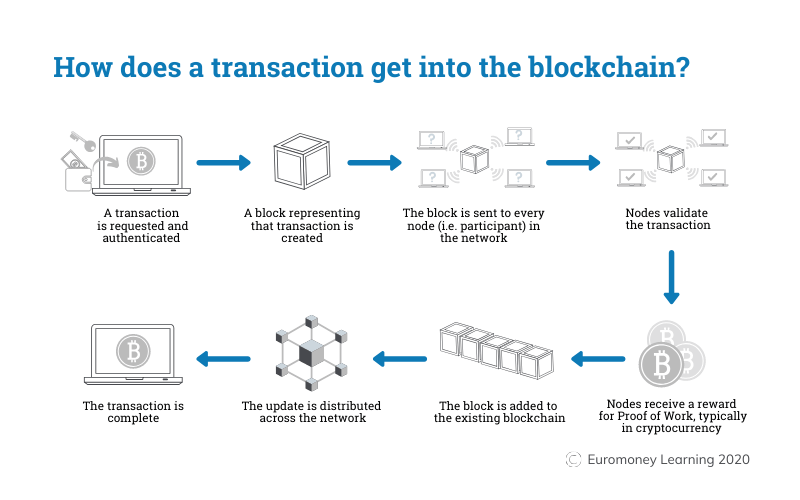

Get Started With Web3: Web3 工作机会
自学入门 Web3 不是一件容易的事，作为一个刚刚入门 Web3 的新人，梳理一下最简单直观的 Web3 小白入门教程。整合开源社区优质资源，为大家从入门到精通 Web3 指路。每周更新 1-3 讲。
欢迎关注我的推特：@bhbtc1337
进入微信交流群请填表：表格链接
文章开源在 GitHub：Get-Started-with-Web3
Web3 大厂工作机会
Alchemy
- 网址：https://boards.greenhouse.io/alchemy
- 简评：无远程工作机会，无实习，地点在美国
Uniswap
- 网址：https://boards.greenhouse.io/uniswaplabs
- 简评：无实习，地点在美国，申请工作需要有美国工作资格
Aave
- 网址：https://jobs.eu.lever.co/aave
- 简评：观感不错，在英国，有远程机会，无实习
Openzeppelin
- 网址：https://www.openzeppelin.com/jobs
- 简评：观感不错，地点在美国，有远程机会，无实习
Consensusys
- 网址：https://consensys.net/open-roles/
- 简评：观感不错，地点在美国，有远程机会，无实习
Paradigm
- 网址：https://www.paradigm.xyz/opportunities
- 简评：观感不错，工作很多，有远程机会，有实习（市场方向），fellowship 活动有点意思，地点在美国，年龄限制 23 岁以下
Sui
- 网址：https://jobs.sui.io/jobs
- 简评：观感不错，地点在美国，有远程机会，有实习（密码学博士生），很不错
Apotos
- 网址：https://boards.greenhouse.io/aptoslabs
- 简评：观感不错，地点在美国，有远程机会，没有实习
Curve
- 网址：https://classic.curve.fi/careers
- 简评：工作比较少，可远程，没有实习
面试资料
中文问答
- 问：什么是区块链？
- 答：区块链是一个分布式的、去中心化的公共账本，用于记录跨多台计算机的交易。其核心特点和优点如下：
- 不可篡改性：一旦数据（交易）被写入区块链，就几乎不可能修改或删除。
- 透明性：所有区块链的参与者都可以看到链上的所有交易，这增强了整个系统的透明性。
- 分布式性：区块链上的数据被存储在全球范围内的许多计算机上，而不是中心化的服务器上。这样做提高了数据的安全性和持久性。
- 去中心化：不需要第三方或中间人进行交易验证或参与，这降低了成本并提高了速度。
- 智能合约：一些区块链，如以太坊，允许在区块链上创建并执行自动化的、条件性的合约，这被称为"智能合约"。
- 共识机制：为了确认交易并添加新的区块，区块链使用各种共识机制，如工作证明（Proof of Work，PoW）和权益证明（Proof of Stake，PoS）。
区块链最初是为比特币（一种加密货币）而创建的，但其应用已远超过加密货币，如供应链、医疗保健、金融服务、房地产和更多其他领域。
- 问：什么是以太坊？
答：以太坊是一个开放的、去中心化的区块链平台，允许用户创建和执行智能合约。它的货币单位是以太币（Ether，ETH）。与比特币不同，以太坊的主要目的不仅仅是作为一种电子货币，而是为了提供一个支持去中心化应用（DApps）的平台。
以太坊是一个去中心化的公共区块链平台，由 Vitalik Buterin 于 2013 年提出，并于 2015 年正式发布。其核心创新之一是引入了一个名为"智能合约"的编程框架，允许开发人员在区块链上创建和运行去中心化应用程序（DApps）。这些应用程序可以涵盖从简单的货币交易到复杂的金融和组织结构。
以太坊的内部数字货币是以太币（Ether 或 ETH）。尽管以太币本身在加密货币市场中有价值，但它主要是作为"燃料"在以太坊网络中使用，用于支付智能合约操作和交易费用。
问：什么是比特币？
答：比特币是第一个也是最知名的加密货币。它于 2008 年由一个名为中本聪（Satoshi Nakamoto）的匿名个体或团体提出，并于 2009 年作为开源软件发布。比特币的主要目的是提供一种去中心化、不需要中间机构即可进行的货币交易方式。
比特币，经常被誉为数字黄金，是第一个并且最为广泛认知的加密货币。它由一个名为中本聪（Satoshi Nakamoto）的匿名个体或团体于 2008 年发布白皮书，2009 年发布其开源软件。比特币的核心思想是提供一种完全去中心化的货币，不受任何政府、银行或中间机构的控制。它使用了一种称为工作证明（Proof-of-Work）的共识机制来验证和添加交易到其公共账本——区块链。
比特币不仅仅是一种数字货币，它也代表了一个对金融和货币系统的革命性创新。
问：什么是智能合约？
答：智能合约是自动执行的、基于特定条件的合同。它们存储在区块链上，并且一旦被触发，将自动执行预定的指令。智能合约可以用来自动执行如转账、资产管理和复杂的逻辑操作等任务。以太坊是支持智能合约的最知名的区块链平台之一。
智能合约是存储在区块链上的自动执行的脚本或程序。这些程序被设计成在满足特定条件时自动执行或验证一系列的指令。例如，一个智能合约可以设定为："当 A 支付了 100 以太币给 B，自动将 B 的某物品所有权转给 A。"
由于智能合约在区块链上，这意味着它们具有不可篡改和透明的特性。这使得智能合约在许多领域中都非常有价值，尤其是在需要建立信任和自动化流程的地方，例如金融、房地产和供应链管理。
问：什么是去中心化金融？
- 答：去中心化金融，通常缩写为"DeFi"（Decentralized Finance），指的是一系列金融应用在区块链上，特别是在以太坊上的去中心化网络中，旨在重构现有的金融系统。与传统的银行和金融机构相比，DeFi 强调一个不需要中间人的开放和无许可的金融系统。
以下是 DeFi 的核心特点和组件：
开放性和无许可性：DeFi 应用通常是开放的，这意味着任何人都可以使用，不需要经过任何形式的审查或许可。
智能合约：大多数 DeFi 应用都是建立在智能合约上的，这些自动执行的程序在满足特定条件时自动运行。
稳定币：稳定币是一类加密货币，它的价值与传统货币（如美元或欧元）挂钩，为 DeFi 系统提供稳定的价值存储。
借贷平台：这些是 DeFi 生态系统中最受欢迎的应用之一，允许用户借入或出借资产，并赚取利息。
去中心化交易所（DEX）：与传统的加密货币交易所不同，DEX 允许用户直接、点对点地进行交易，而无需信任中间人。
资产代币化：DeFi 应用允许各种实体资产（例如房地产或艺术品）被代币化，然后在区块链上交易。
预测市场：这些市场允许用户就未来事件的结果下注，如选举结果或股票市场的动态。
合成资产：这些是衍生品，它们模拟其他资产（如股票、债券或商品）的价格，但存在于区块链上。
流动性池和流动性挖矿：用户可以存放他们的资产，以供其他用户交易，并因此获得交易费和其他激励。
DeFi 的出现为金融市场的参与者提供了更多的透明度、开放性和可访问性。然而，它也带来了风险，尤其是考虑到许多 DeFi 项目都是实验性质的，且对于代码或智能合约中的漏洞可能造成的损失没有保障。
英文问答
- Q: What is Foundry?
A: Foundry is a comprehensive suite of tools for building and deploying decentralized applications (dApps) on the Ethereum blockchain.
Q: What is Consensus mechanism?
A: Consensus mechanism is a process utilized by the distributed systems or blockchain networks to obtain agreement on a single data version, ensuring that all nodes in the network have consistent data records.
Q: Describe the process of a transaction on the blockchain?
A: In a blockchain network, every node has a copy of the ledger or blockchain record, and all nodes must agree on the current state of the ledger to ensure that transactions are valid and prevent double-spending. Consensus algorithms use various methods, such as Proof of Work (PoW), delegated Proof of Stake (dPoS), and Byzantine Fault Tolerance (BFT), to validate transaction blocks and ensure a consistent ledger across the network.

Q: What is the consensus mechanism of Ethereum?
- A: Proof of Stake
英文寒暄
- Interviewer: Hello, I'm Tracy. Thanks so much for coming in.
- Jane (Interviewee): It's my pleasure, thank you so much for meeting with me.
- Interviewer: Have a seat, please. Jane, how are you doing?
- Jane (Interviewee): I'm doing really well. It's such a nice day out there.
- Interviewer: Yes, it is. It was perfect weather all the weekend. Oh, can I have your resume（简历）? Jane, now tell me a little about yourself.
- Jane (Interviewee): I studied tourism management in Fudan University. Last year, I graduated and got my bachelor degree with GPA ranking first. Then I made up my mind to further my study. So, now I'm a graduate student in the same major and same school. In my senior year, I worked in Ctrip as a marketing intern. During that time, I ran a social media account on my own, and got thousands of fans in just a month. I also started a co-branding project from scratch. Because of this work, I've earned a lot of experience in communication and how to learn things in a short time. Now I am looking for new opportunities and I'm really honored to be here today.